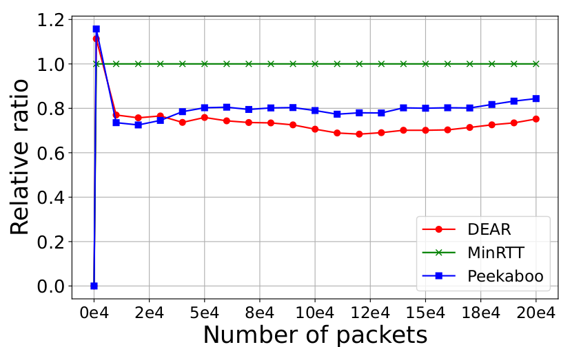
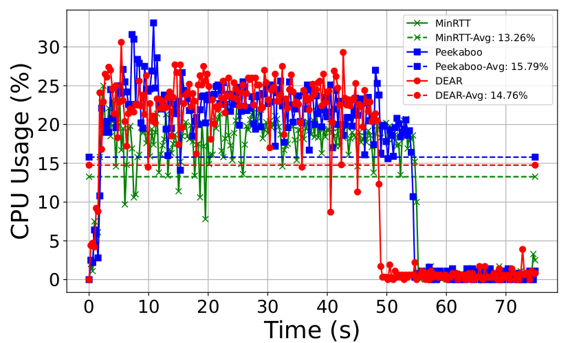

Authors:
Pattiwar Shravan Kumar , BITS Pilani Hyderabad Campus, India
Paresh Saxena , BITS Pilani Hyderabad Campus, India
Ozgu Alay, University of Oslo, Norway and Karlstad University, Sweden
Abstract:
This is a brief summary of the research paper. It provides an overview of the problem, methodology, results, and conclusions. Recently, the Internet has experienced a substantial increase in the use of bandwidth-intensive applications due to the introduction of fifth generation (5G) and beyond 5G (B5G) systems. Empirical evidence has shown that multipath transport layer protocols such as multipath TCP (MPTCP) and multipath QUIC (MPQUIC) are successful in addressing the increasing need for higher bandwidth in the exist- ing Internet infrastructure. Nevertheless, multipath schedulers still face difficulties in efficiently handling significant amounts of variability in diverse network scenar- ios. This paper introduces, Deep reinforcement learning (DRL) Empowered Actor- critic schduleR, DEAR, a method designed for multipath QUIC in 5G/B5G hybrid networks. DEAR is developed utilising a DRL based actor critic methodology. This approach significantly improves the decision-making abilities of the scheduler in various rapidly changing network scenarios. We conducted experiments with the DEAR scheduler in several network settings, encompassing networks with rapidly fluctuating bandwidth, networks with rapid and short-term fluctuations, and net- works experiencing progressive outages. We also conducted tests on the DEAR al- gorithm using the Lumos5G dataset, which consists of real network traces from two distinct service providers. We have performed a comparative analysis of DEAR with other state-of-the-art multipath schedulers, including another scheduler based on RL, Peekaboo, and other non-RL rule-based schedulers such as round robin (RR), earliest completion first (ECF), blocking estimation (BLEST), and minimum round trip time (minRTT). Our evaluation demonstrates DEAR’s superior performance compared to existing algorithms. In scenarios with fast-changing bandwidth, DEAR outperforms rule-based schedulers by 42.30% and Peekaboo by 17.77%. Similarly, in networks with fast short-scale variations, DEAR achieves gains of 22.22% over..... Read Full Paper
Keywords: Multipath Networking, MPQUIC, Schedulers, 5G/B5G Networks
|  |  |
Convergence |
CPU Testing |